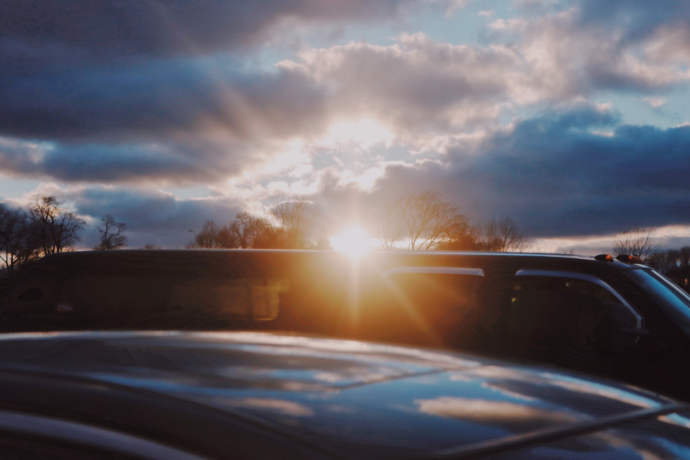
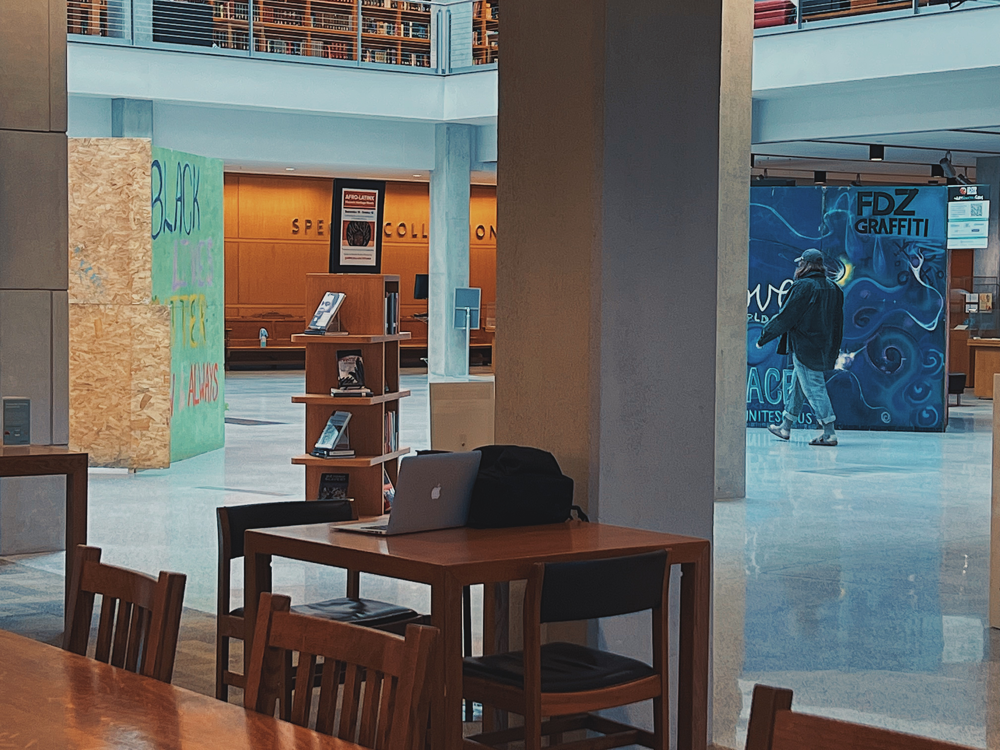
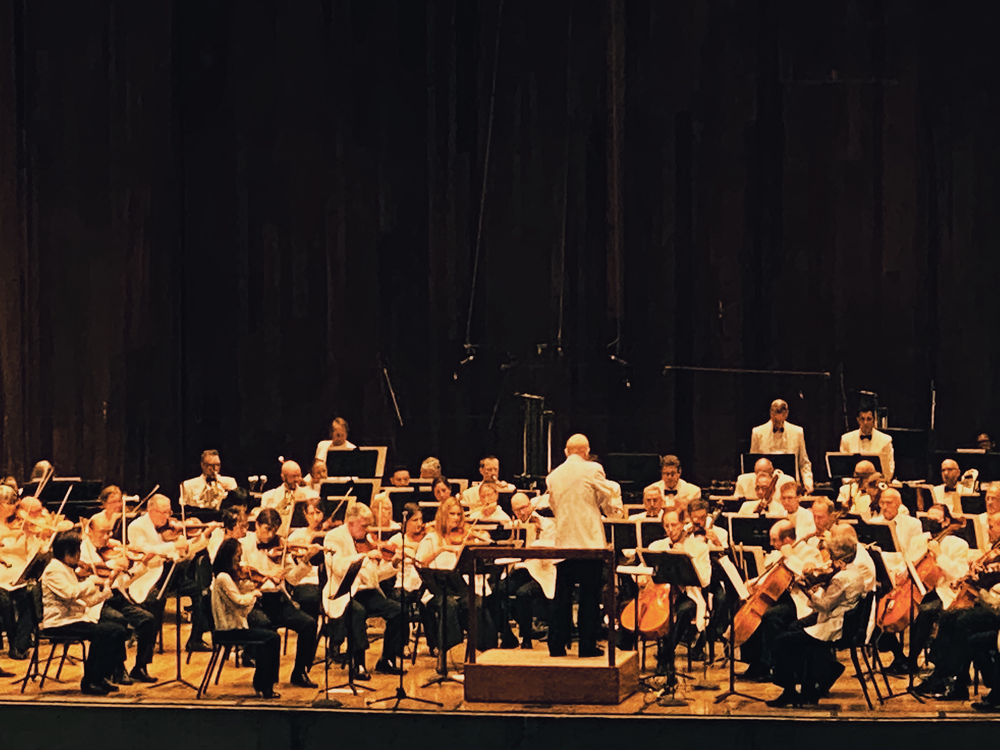
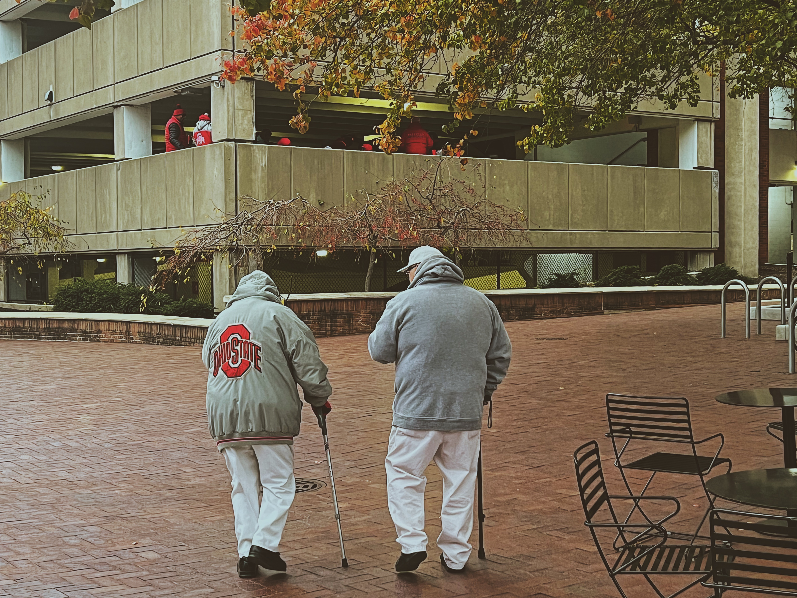
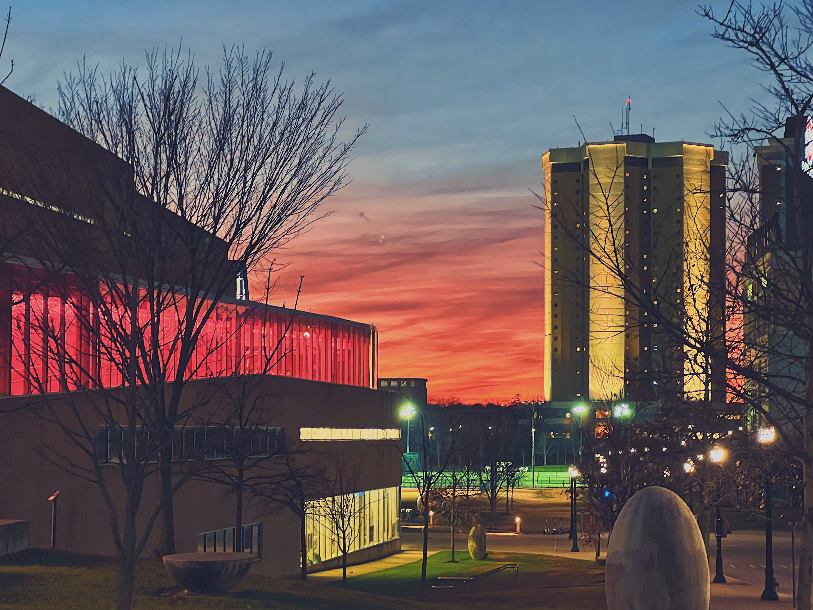
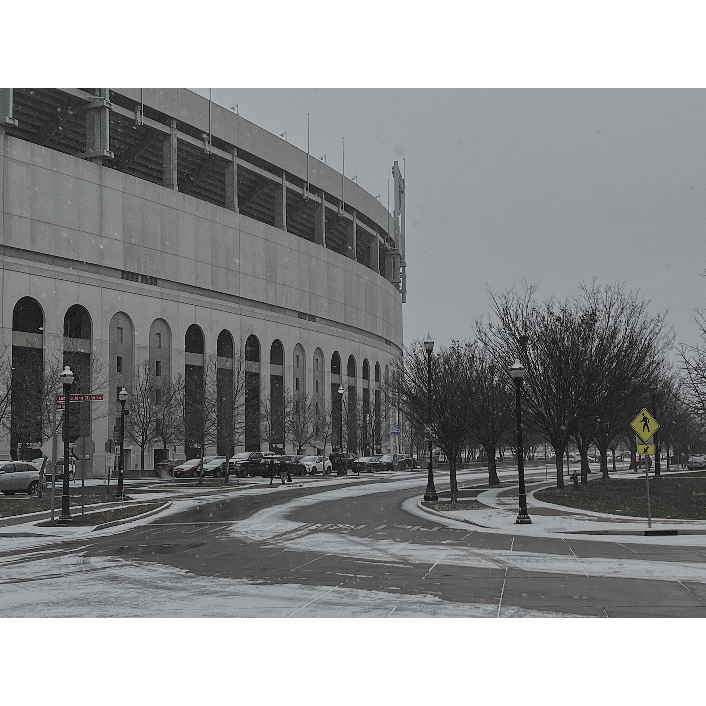
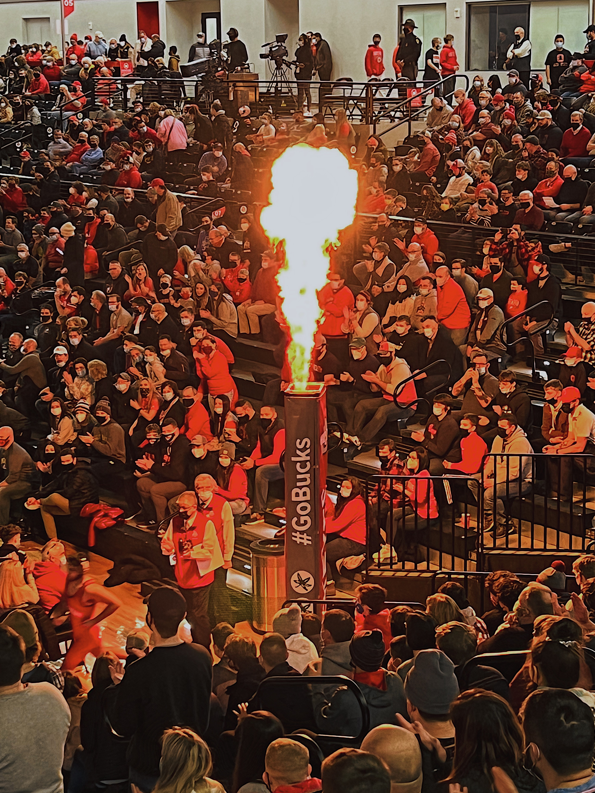
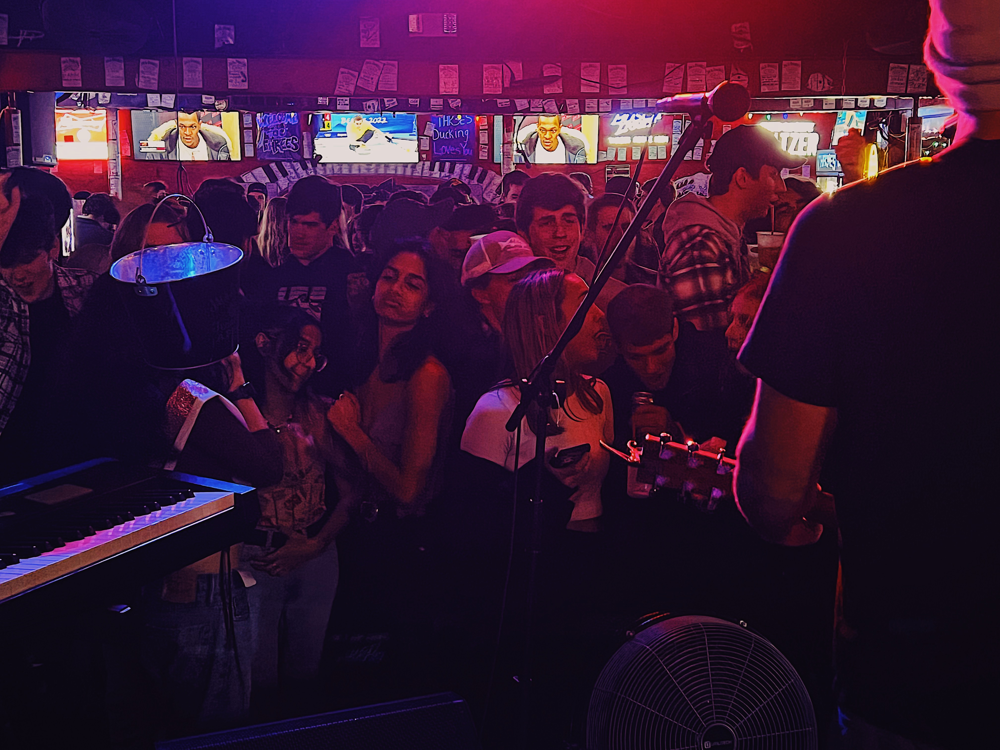
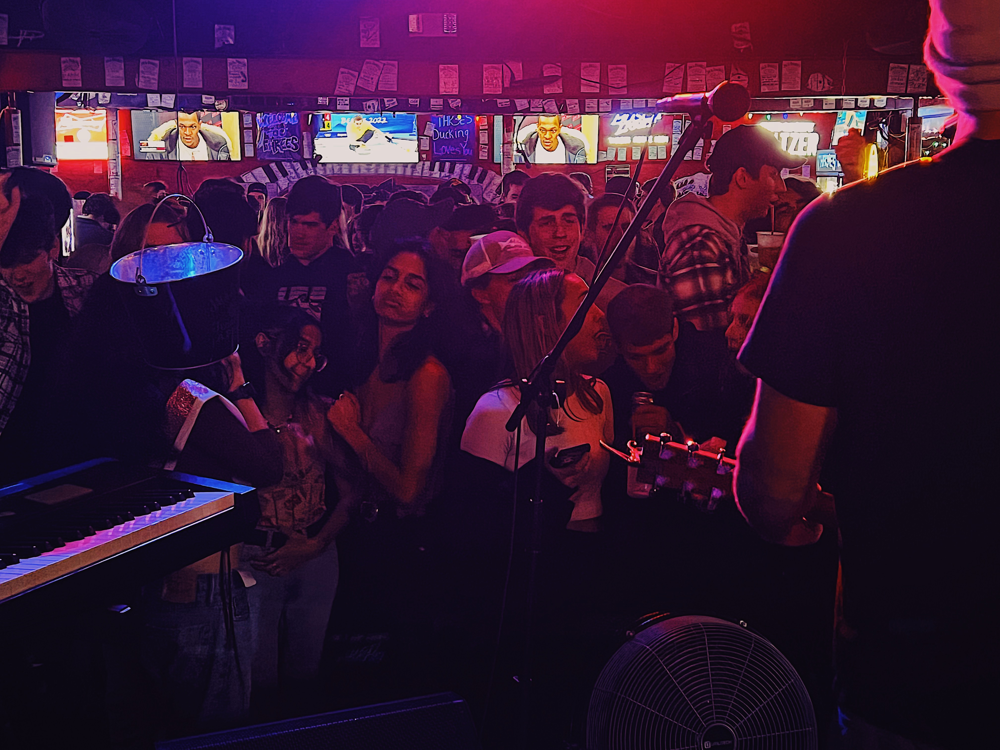

Columbus, Ohio - Becoming Myself
Where my American dream began — a journey of education, discovery, and true growth.
Moving to Columbus for my undergraduate studies was my first time living in the United States. The experience was transformative: a completely new culture, a new language environment, and the excitement of forging a new path. It wasn’t just about adapting — it was about thriving.
As an Economics major, I had the unique opportunity to blend business acumen with technical skills. Through my coursework, I built a strong foundation in financial analysis, market dynamics, and organizational behavior, while also deepening my expertise in data analysis, econometrics, and statistical modeling. This combination became a powerful asset — allowing me to approach data not just from a technical standpoint, but with an understanding of business strategy and real-world impact.
Over these years, I didn’t just acquire knowledge — I learned how to learn. Columbus was where I truly understood the value of continuous growth, adaptability, and resilience. These foundational experiences became the bedrock of my later success as a data scientist: critical thinking, logical analysis, and the courage to tackle uncertainty.
Academically, I grew strong in statistics, programming, and data exploration. I began developing projects that demanded real-world problem-solving — modeling outcomes, visualizing insights, and communicating findings clearly to stakeholders. Every project sharpened not just my technical skills but also my creativity.
 Outside of academics, Columbus helped me discover my passions. I fell in love with photography, capturing everyday moments through a new lens. Cooking became a joyful part of my life — a way to stay connected to home and also explore new flavors. Traveling across different states opened my mind to the incredible diversity of people, ideas, and ways of life.
  Columbus was where I grew from a young student into a global citizen. A place where I built friendships that crossed continents, developed habits of self-discipline, nurtured passions, and cultivated the analytical and creative mindset that defines me today.
 
